この物語はプログラミング初心者がrubyを導入してXRP自動積立botを起動させるまでの(再現)物語です。
著者：白鳥メグミ
（はじまり）
4月某日のことです。
ZaifではBTC、MONA、NEM、ETHが自動積立できますがXRPでも自動積立ができたらいいなあと私は思っていました。
仲良しの桃芭蕉実さんが最近どうやらbitbank用自動売買botを開発に夢中らしいと知った私は
これはもしかしたらXRP自動売買botを作ってもらうチャンスなのでは
とお願いしてみましたら 桃芭蕉実さんは快く承諾して下さいました。
実行するには"ruby"と"gem"を導入しなければならないとのことで
この物語は初心者の私が導入に苦労した点をまとめてたものです。
初心者がつまずきそうなことが書いてありますので
もしかしたらこれからbotを導入する予定もしくは導入したい方には役立つことが書いてあるかもしれません。
環境
Windows 8.1(64bit版)
rubyの導入
まずは"ruby導入"でググって公式サイトを探します。
https://www.ruby-lang.org/ja/
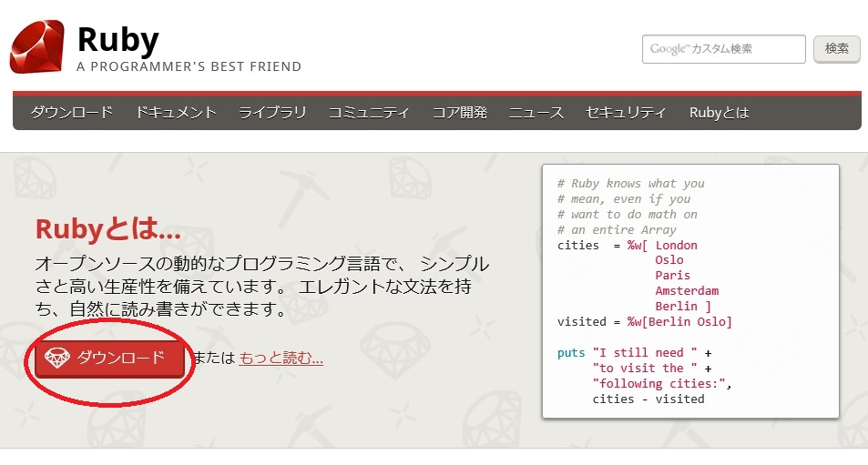
ふむふむ・・・でとりあえず「ダウンロード」をぽちっと。
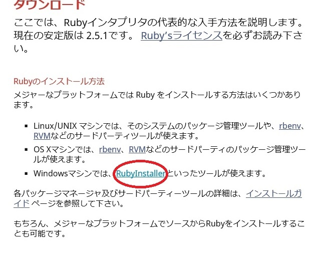
「RubyInstaller」をぽちっと。
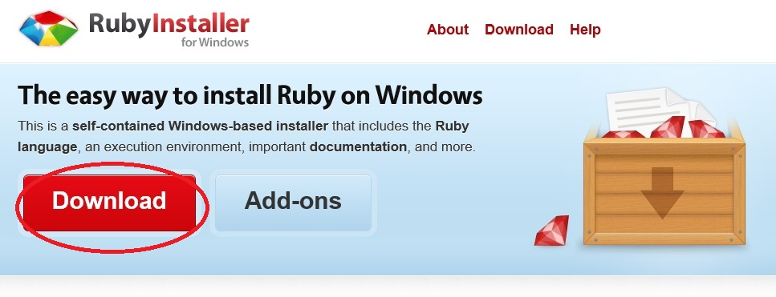
「Download」をぽちっ。
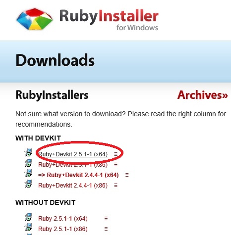
botを動かすのに"devkit"（開発キット）とかいうのが必要か分かりませんでしたので（注：初心者です）
とりあえず"WITH"（あり）の方の一番新しいものを選びます。（私のPCは64bit版です）
ダウンロードしたファイルを開きます。

"accept"（承諾）を選びます。
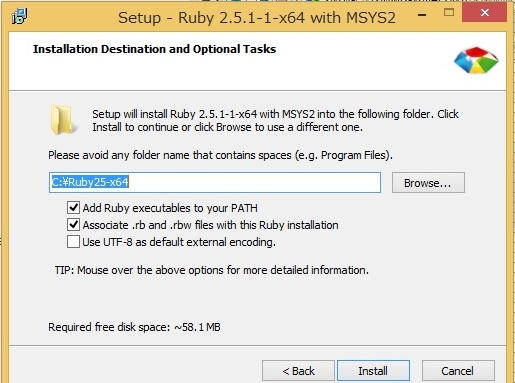
"PATH"の設定と拡張子".rb"の関連付けのみチェックを入れます。
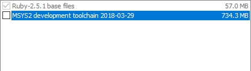
"MSYS2"とかよく分かりませんのでチェック外しておきます。（注：初心者）
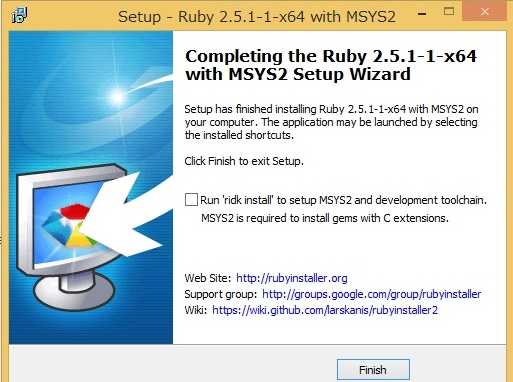
これでインストール終了です。やりました！(*´▽｀*)
gemの導入
次にgemの導入です。
桃芭蕉実さんのgithubページに移動します。
https://github.com/momoandbanana22/b5
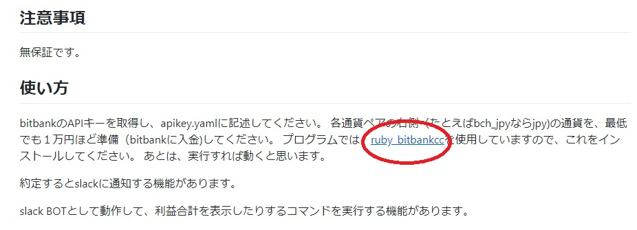
"ruby_bitbankcc"というgemを導入しなければならないようです。ぽちっ
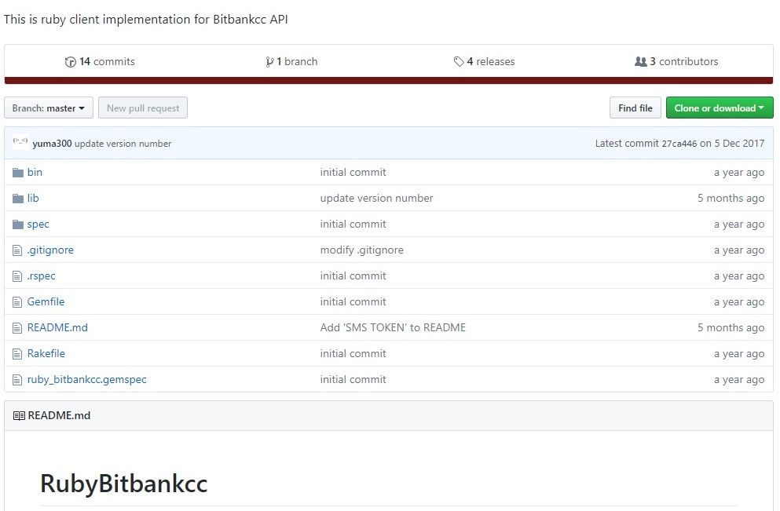
スクロールして・・・
"Installation"のところを確認します。
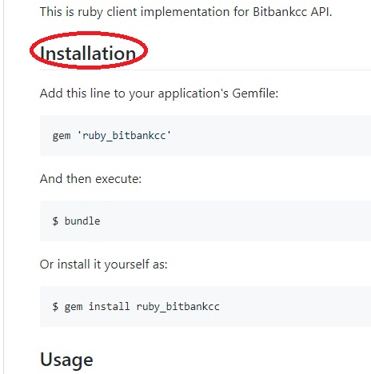
ふむ・・・？
とりあえずrubyを起動して打ち込んでみましょうか。
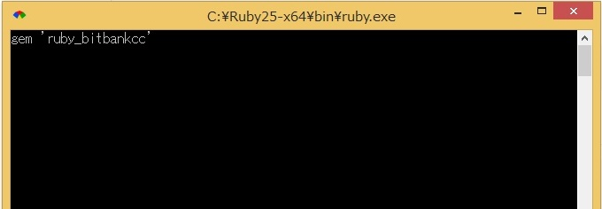
何も起きません。（注：初）
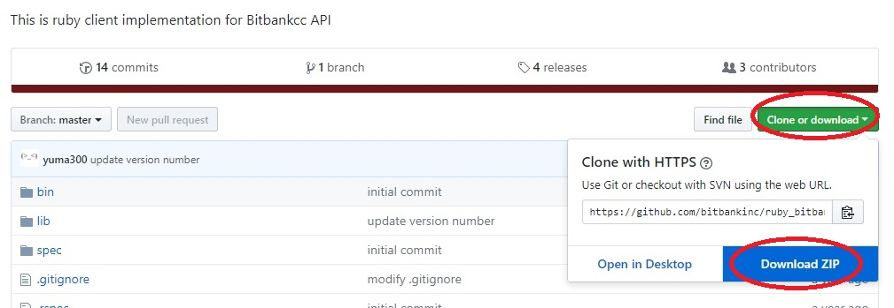
とりあえずzipファイルをダウンロードして解凍してローカルにおきます。
ググると"コマンドプロンプト"でおこなうとのこと。
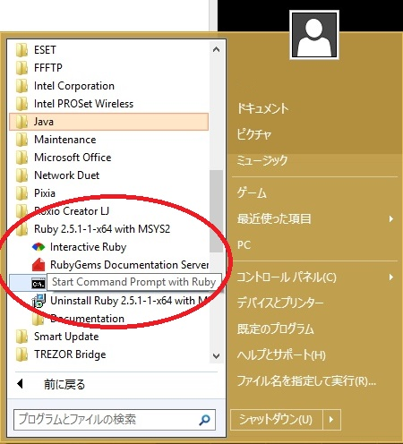
スタートメニューからコマンドプロンプトを実行します。
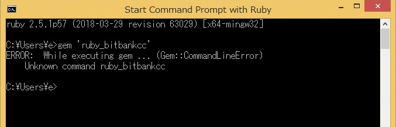
"ruby_bitbankcc"なんて人知らない、と言われました（´・ω・｀）（注：）
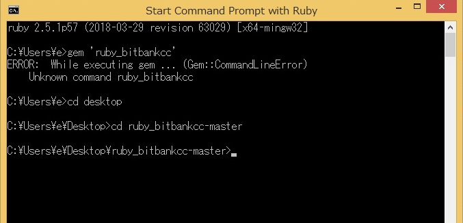
"cd"(change directory)コマンドでzipを解凍した先に移動します。
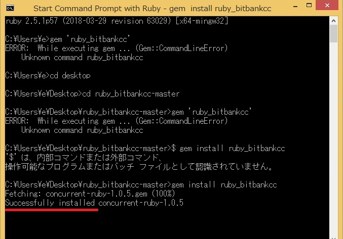
"gem 'ruby_bitbankcc'"と打ち込んでもさっきと一緒・・・
"$ gem install ruby_bitbankcc"と打ち込んでみたらこれも違うようです。（"$"はUNIX系の表示のようです。）（注）
"gem install ruby_bitbankcc"と打ち込んでみたら・・・いけました(*'ー'*)
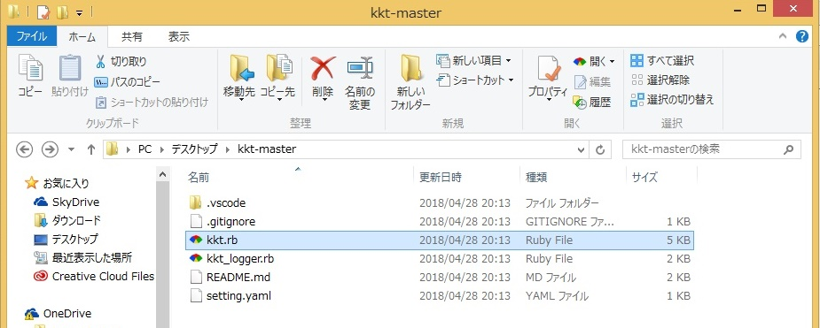
このまま"kkt.rb"を起動してもすぐにwindowが閉じてしまいます。動きません。
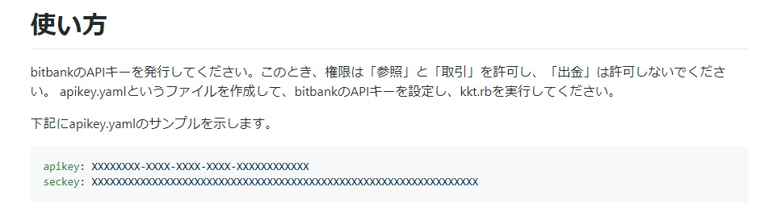
桃芭蕉実さんのgithubのkktページを確認します。
bitbankからAPIキーを発行する必要があります。
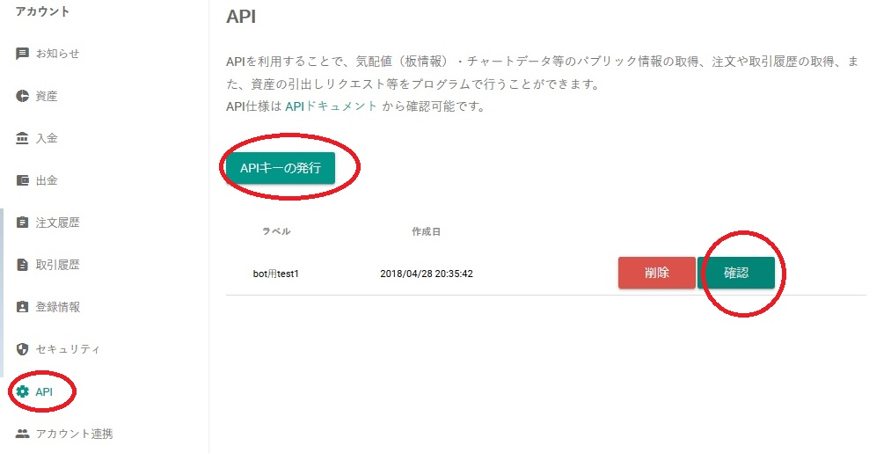
「参照」「取引」を許可して発行します。
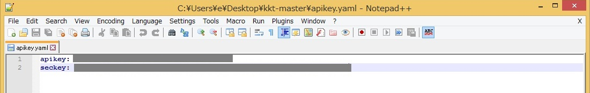
発行したキーをメモ帳などのエディタを使って"apikey.yaml"というファイル名で保存します。（エンコードは"UTF-8"が良いのかな？）
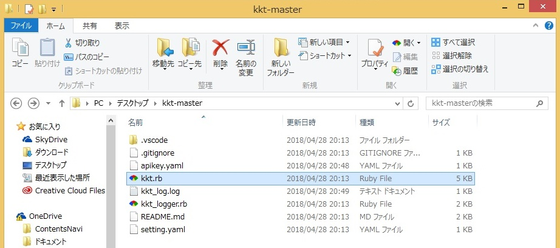
再度"kkt.rb"を起動します。
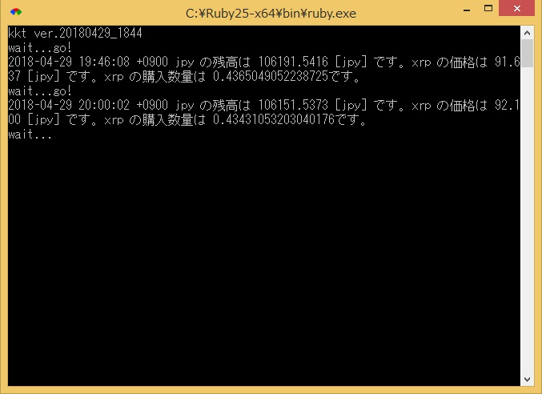
動きました！ヾ(=^▽^=)ノ
XRP自動積立botの利点
XRP自動積立bot"kkt"の利点は
１．Zaif取引所にはない"XRP"を積み立てることができる
２．手数料がかからない（電気代はかかる）
３．入金さえしていれば、すぐに開始できていつでも止められる
４．高値掴み防止装置があるので設定した上限価格を超えて購入しない（上限価格で指値注文になる）
の4点でしょうか。
また設定ファイルの中をを覗くと分かりますが通貨の種類、購入金額、注文周期、上限価格を変更するできます。
自分に合った設定を見つけてくださいね。
Let's enjoy your investment! o(*^▽^*)o~♪
（おわり）